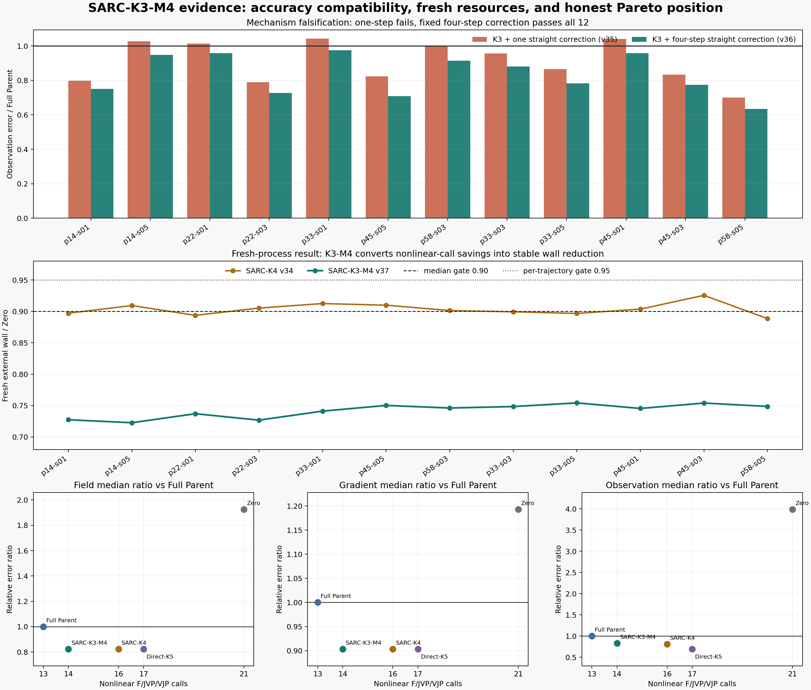

SARC-K3-M4：用低保真缺陷修正，替掉一次昂贵曲线重线性化
Learned Direct 初值先进入未修改的曲线 GN-CGLS K3；剩余曲线观测残差由冻结直线算子做恰好四步 CGLS 修正，再用一次高保真曲线 forward 决定接受或回退。v38.1 在两条额外但已历史打开的轨迹上保住三项精度；v39.1 再用 72 份 macOS 原始计时回执确认资源优势。v40.2 将冻结方法零适配迁到 BLASTNet H2-air DNS，正式外部精度门 0 / 4，证明该正结果不能直接外推。
algorithm_breakthrough=false。
这次不是调用账上的“纸面加速”
v34 的旧 SARC-K4 只差 0.25 个百分点却仍被判 FAIL；v37 没有重跑碰运气，而是用更少的曲线调用与更完整的低保真修正把 wall 比降到 0.75 左右。

精度迁移和资源复验都成立，但数据不是 fresh
这一步没有换模型或放宽门槛。它专门回答两件事：方法能否迁到另外两个工况，以及 wall/RSS 是否能由操作系统原始回执独立复核。

v38.1 · 数值迁移
P22-S05 与 P58-S01 都通过相对 Full Parent 与 Zero 的 field / gradient / observation 兼容门，也没有被 Direct-K3 在成本感知 Pareto 意义上支配。
P22 candidate：0.377172 / 0.750618 / 0.010339
P58 candidate：0.394918 / 0.694652 / 0.029653
v39.1 · 资源复验
2 trajectories x 4 arms x (1 warmup + 8 measured) = 72 个新进程；每个 arm 在四个顺序位置各出现两次。
wall / Zero：中位 0.744260，最差 0.745148
wall / Direct-K4：中位 0.825418，最差 0.827567
| 轨迹 | SARC wall | Zero-K4 | Direct-K3 | Direct-K4 | SARC / Zero | SARC / Direct-K4 |
|---|---|---|---|---|---|---|
| P22-S05 | 7.295 s | 9.790 s | 7.245 s | 8.815 s | 0.745148 | 0.827567 |
| P58-S01 | 7.430 s | 9.995 s | 7.220 s | 9.025 s | 0.743372 | 0.823269 |
72 + 72 + 72
worker receipts、场文件和原始 macOS time receipts 全部存在并被独立重读。
3.79e-8
独立场重建的最大绝对差；正式与独立 summary 最大数值差为 0。
Direct-K3 更快
候选相对 Direct-K3 的轨迹等权 wall 比为 1.017994，因此不能写“全局最快”。
all official PoolFire test streams historically opened。v38-v39.1 是 post-open 方法迁移与 fresh-process 资源证据，不是 untouched 泛化。
算法到底做了什么
低保真算子只负责给缺陷方向，高保真曲线 forward 保留最终否决权；在线规则不访问 truth、控制误差或轨迹标签。
相邻观测与冻结几何进入 Direct 3D CNN，给出初始三维场。
在随当前场变化的曲线光路算子上做一次外层、三个 Krylov 内步。
计算部署可见的 r3 = y - Fcurved(x3)。
冻结直线算子从零开始做恰好四步，得到低保真缺陷修正。
只多做一次曲线 F；残差不降就回退到 K3 场。
为什么 M1 失败
一次直线反投影只给近似最陡下降方向。它足以降低大部分观测残差，却无法稳定补齐不同工况中的低频三维缺陷。
5 / 12 observation 劣于 Full Parent，最差 ratio = 1.041992。
为什么 M4 成功
四步固定 CGLS 在同一个低保真 Krylov 子空间里求解更完整的残差子问题；它不是复制下一步曲线 Krylov，而是提供不同的便宜缺陷方向。
12 / 12 三项同时通过 Full Parent 与 Zero。
逐轨迹兼容，不用均值藏失败
所有比值都以误差为分子，低于 1 表示候选更好。成功门要求每一条轨迹、每一个指标都通过。
| 相对 Full Parent | 中位比值 | p90 | 最差比值 | 判决 |
|---|---|---|---|---|
| field relative-L2 | 0.823264 | 0.880547 | 0.895933 | PASS |
| gradient relative-L2 | 0.903305 | 0.929228 | 0.952248 | PASS |
| observation relative-L2 | 0.832347 | 0.958255 | 0.975982 | PASS |
v37 首次过门；v39.1 补齐原始系统回执
每个 arm 都由新的子进程执行；单线程、DNNL cache=0、配对交替顺序。warmup 完整核验但不进入统计。
| 指标 | 实际比值 | 冻结门 | 余量 | 判决 |
|---|---|---|---|---|
| 轨迹等权 external wall 中位 | 0.745827 | ≤ 0.90 | 15.42 个百分点 | PASS |
| 最差轨迹 external wall | 0.754330 | ≤ 0.95 | 19.57 个百分点 | PASS |
| 轨迹等权 max RSS 中位 | 1.006705 | 报告 | +0.67% | 报告 |
| 最差轨迹 max RSS | 1.023578 | ≤ 1.05 | 2.64 个百分点 | PASS |
144
24 warmup + 120 measured；144 份回执与 144 个场文件全部存在。
0.0
独立复算报告 summary 与正式报告的最大数值差。
有限证明
原 runner 未保留 PID 与 time stderr，因此不能事后证明 144 个唯一 OS PID 或二次计时。
诚实回答“是不是最好”
SARC-K3-M4 不是一条无条件支配曲线。它用比 Full Parent 多一次的 nonlinear call，换来三项精度稳定提升。
| 方法 | nonlinear calls | field 中位比 | gradient 中位比 | observation 中位比 | 位置 |
|---|---|---|---|---|---|
| Full Parent | 13 | 1.0000 | 1.0000 | 1.0000 | 更便宜，较不准 |
| SARC-K3-M4 | 14 | 0.8233 | 0.9033 | 0.8323 | 当前 Pareto 候选 |
| SARC-K4 | 16 | 0.8231 | 0.9033 | 0.8121 | 略准，昂贵两次 |
| Direct-K5 | 17 | 0.8231 | 0.9032 | 0.6930 | observation 更准，昂贵三次 |
| Zero | 21 | 1.9255 | 1.1931 | 3.9895 | 被候选支配 |
验证器也允许失败
独立程序不导入正式 benchmark、worker 或 solver。前两版都拒绝了结果；只有明确修复验证器错误并新增回归测试后，第三版才通过。
v1 · FAIL
把 v36 的嵌套 straight ledger 误当成扁平字典。修复为精确检查 learned / residual / total 三层账。
v2 · FAIL
对 fresh 中间 residual history 使用了不合理的 1e-9 容差。科学场与资源门未变。
v3 · PASS
144 回执、144 场、输入、顺序、调用账、字段等价和资源算术全部独立通过。
突破等级：关键正结果，不是正式突破
当前结果已经足以成为论文核心方法候选；但 all official PoolFire test streams historically opened，真实多相机 BOST 也尚未运行。
已经成立
- 12 / 12 已开放轨迹三项精度门
- 2 / 2 额外轨迹 post-open 迁移
- 独立场与指标复算
- 昂贵调用 21 → 14
- 72 份原始 macOS wall / RSS 回执
- 独立重解析、字段与资源算术审计
仍未成立
- untouched PoolFire test 泛化：已无可用官方流
- 跨数据集真正未见密度场
- 真实相机噪声与标定误差鲁棒性
- 组内真实曲线 BOST 数据迁移
- 跨机器资源优势
- 全球唯一、SOTA 或论文录用
key_positive_result=true，
post_open_transfer_proven=true，
fresh_process_resource_replication_proven=true，
algorithm_breakthrough=false，
paper_success=false。